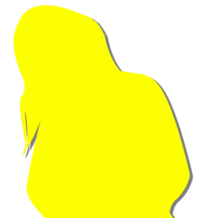
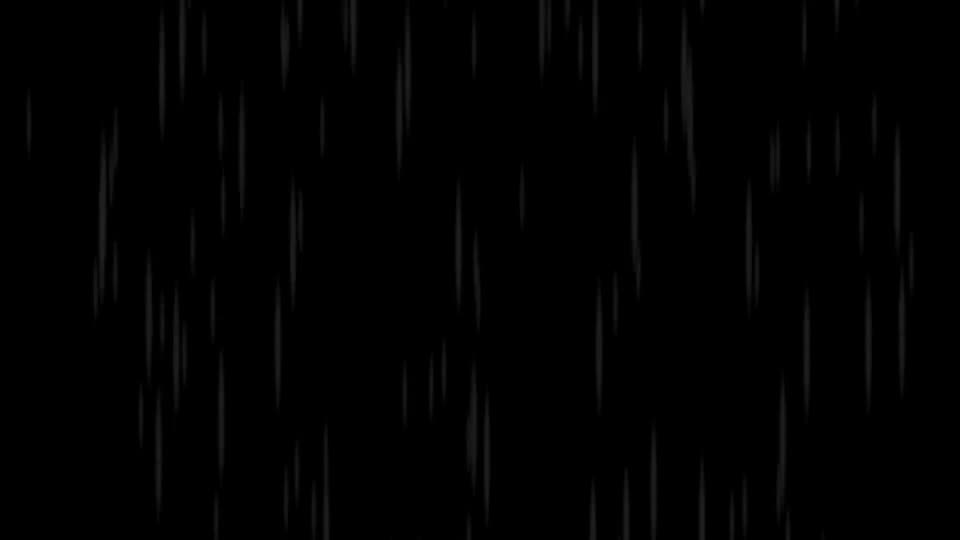
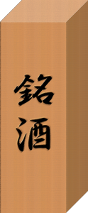

迂回(かいひ)


「もしもしお母さん？ 豊岳駅で夏菜に会ってさ……。
うん……うん……」
五島は出発前からげっそりしている。
五島は出発前からげっそりしている。
「古郡先輩の直感に従うのがベストなのは理解してます……。
でも、あの山を登るなんて……」
「なんか……ごめん……」
結局私たちは、夏菜ちゃんについて行くことになった。
「なんか……ごめん……」
結局私たちは、夏菜ちゃんについて行くことになった。


「あの……夏菜ちゃん？」
五島が遠慮深げに声をかけた。
「あい！ 新村夏菜です！ どうしました五島ちゃん！」
夏菜ちゃんは五島の腕に抱きついた。
五島が遠慮深げに声をかけた。
「あい！ 新村夏菜です！ どうしました五島ちゃん！」
夏菜ちゃんは五島の腕に抱きついた。

「どれくらい歩くのかな……」
「えっと…… 普通の人が歩いたら、2時間くらいかな？」
「に、2時間！？」
お散歩じゃなくて、完全に登山だ。
しかもこんな荷物を持って……。
「えっと…… 普通の人が歩いたら、2時間くらいかな？」
「に、2時間！？」
お散歩じゃなくて、完全に登山だ。
しかもこんな荷物を持って……。
「よいしょっと！」
と、夏菜ちゃんが私たちの荷物を奪って肩にぶら下げた。
「この荷物は、私が責任を持って預かるね！ もし、なくしたりしたら…… この身体でご奉仕するから…… 優しくしてね……」
私と五島は10歳児の露骨な下ネタに絶句してしまった。
と、夏菜ちゃんが私たちの荷物を奪って肩にぶら下げた。
「この荷物は、私が責任を持って預かるね！ もし、なくしたりしたら…… この身体でご奉仕するから…… 優しくしてね……」
私と五島は10歳児の露骨な下ネタに絶句してしまった。

「よし！ お母さんに連絡しておいたぞ！ 夏菜、そんなに荷物持って大丈夫か？」
「大丈夫大丈夫！ これより重いの運んだこと、何回もあるし！ 春花ちゃんのも持つよ！」
3人分の荷物を持ってあの山を登る気……？
「大丈夫大丈夫！ これより重いの運んだこと、何回もあるし！ 春花ちゃんのも持つよ！」
3人分の荷物を持ってあの山を登る気……？

「はあ……はあ……」
「ぜえ……ぜえ……」
「きつい……」
開始30分。
空がオレンジ色に焼けてくるに従い、この斜面が足腰に堪えてきた。
「ぜえ……ぜえ……」
「きつい……」
開始30分。
空がオレンジ色に焼けてくるに従い、この斜面が足腰に堪えてきた。
「はいはいみなさん、頑張って頑張って！」
夏菜ちゃんが最後尾で檄を飛ばしている。
あれだけの荷物を持っているとは思えないほどにたくましい声援だ。
夏菜ちゃんが最後尾で檄を飛ばしている。
あれだけの荷物を持っているとは思えないほどにたくましい声援だ。

「ちょ、ちょっと休憩……」
春花が道脇の石に腰かけた。
「春花ちゃん、座ったら余計しんどくなるよ？」
「ちょっと黙ってくれ……。少しだけ座らせてくれ……」
しかし、春花も五島も、登り始めてから1度も文句を言っていない。
私の直感だからだろうけど、やっぱり申し訳ない……。
春花が道脇の石に腰かけた。
「春花ちゃん、座ったら余計しんどくなるよ？」
「ちょっと黙ってくれ……。少しだけ座らせてくれ……」
しかし、春花も五島も、登り始めてから1度も文句を言っていない。
私の直感だからだろうけど、やっぱり申し訳ない……。

「でも……
いい景色ですねえ！」
五島が木々の間から見える風景に目をやった。
太陽が地平線で半分に分断され、半球からまぶしくも優しい光を私たちに届けてくれる。
そして、遠くに渓流が流れているのが見える。
「あの渓流のあたりがゴールだよ！」
まだ3kmはありそうだ。
平地でも30分以上かかる距離を、この山道で登るなんて……。
五島が木々の間から見える風景に目をやった。
太陽が地平線で半分に分断され、半球からまぶしくも優しい光を私たちに届けてくれる。
そして、遠くに渓流が流れているのが見える。
「あの渓流のあたりがゴールだよ！」
まだ3kmはありそうだ。
平地でも30分以上かかる距離を、この山道で登るなんて……。
「夏菜ちゃん大丈夫？ 重くない？」
「ぜーんぜん平気！ こういうのは、集落で1番の若手である私の仕事だもん！」
夏菜ちゃんは汗1つかいていない。
私にはここでの生活は、きっと無理だ……。
「ぜーんぜん平気！ こういうのは、集落で1番の若手である私の仕事だもん！」
夏菜ちゃんは汗1つかいていない。
私にはここでの生活は、きっと無理だ……。
「さあ春花ちゃん、立って！ 出発出発！ 真っ暗になったら大変だよ！」
「くっそう……行くかあ……」
春花は勢いに任せて立ち上がった。
と、顔に何か冷たい物が当たった。
――雨だ。
「くっそう……行くかあ……」
春花は勢いに任せて立ち上がった。
と、顔に何か冷たい物が当たった。
――雨だ。


video: 雨1.wmv雨は瞬く間に強さを増し、さっきまでの晴天が嘘のように暗闇に包まれた。
「みんな、こっちこっち！」
私たちは急いで夏菜ちゃんの後を追った。
山道は濁流と化し、まともに歩ける状態ではない。
「みんな、こっちこっち！」
私たちは急いで夏菜ちゃんの後を追った。
山道は濁流と化し、まともに歩ける状態ではない。
video: 雨1.wmv「もう何だよこれ！」
「山の天気きらーい！」
「山の天気きらーい！」

――夏菜ちゃんに案内されたのは、岩の 庇 だった。
奥行3メートルほどで、雨の飛沫が少々飛んでくるが、傘よりは雨除け効果がある。
中の地面も少し高めになっているから、濁流が流れ込んでくる心配もない。
奥行3メートルほどで、雨の飛沫が少々飛んでくるが、傘よりは雨除け効果がある。
中の地面も少し高めになっているから、濁流が流れ込んでくる心配もない。

「この雨なら、すぐ止むよ！」
夏菜ちゃんは疲れた様子も見せず、どす黒い空を眺めている。
夏菜ちゃんは疲れた様子も見せず、どす黒い空を眺めている。


「くそう……ずぶ濡れだぜ……」
「火、起こせませんかね？ このままじゃ風邪引いちゃいますよ……」
「そんなの持ってないぞ……。 あ、五島！ お前花火セットあるよな！？ マッチかライターないか！？」
「新村先輩賢い！」
「お前に頭を褒められても嬉しくないぞ……。 燃やせるものないか？」
「火、起こせませんかね？ このままじゃ風邪引いちゃいますよ……」
「そんなの持ってないぞ……。 あ、五島！ お前花火セットあるよな！？ マッチかライターないか！？」
「新村先輩賢い！」
「お前に頭を褒められても嬉しくないぞ……。 燃やせるものないか？」


「私、飯沢県のガイドブック持ってるよ。それだけだとあまり時間持たないけど……」
「うーん長い時間燃える物は……。 あ！ そう言えば！」
春花は手土産のお酒の包み紙を破いた。
「やっぱりそうだ！ この箱、木でできてる！ これなら燃やせそうだぞ！」
「うーん長い時間燃える物は……。 あ！ そう言えば！」
春花は手土産のお酒の包み紙を破いた。
「やっぱりそうだ！ この箱、木でできてる！ これなら燃やせそうだぞ！」

「新村先輩、それは桐ですよ？
桐はタンスに使われるくらいだから、燃えにくい木材なんですよ……」
あと燃える物と言えば着替えくらいしかない。
さすがにこれを燃やすのは…… って―― 着替えがあるなら……。
あと燃える物と言えば着替えくらいしかない。
さすがにこれを燃やすのは…… って―― 着替えがあるなら……。
「ねえ……単純に着替えればいいだけじゃない？」
「なつみ賢い！」
「先輩賢い！」
これって……褒められてるんだよね……？
「なつみ賢い！」
「先輩賢い！」
これって……褒められてるんだよね……？

――夏菜ちゃんの予言通り、雨は10分ほどで止んでしまった。
私たちは着替えて、道の濁流が収まるのを待った。
「夏菜、お前着替えなくて大丈夫か？ さすがにお前でも濡れっぱなしはまずいだろ？」
「あはは！ 私は平気へい…… へい…… へ…… へっちょん！」
私たちは着替えて、道の濁流が収まるのを待った。
「夏菜、お前着替えなくて大丈夫か？ さすがにお前でも濡れっぱなしはまずいだろ？」
「あはは！ 私は平気へい…… へい…… へ…… へっちょん！」
「…………
私の服……
着る？」
五島が夏菜ちゃんに乾いた服を差し出した。
「え！？ 五島ちゃんの服、着ていいの！？ やったー！」
夏菜ちゃんは濡れた服を替えられることより、五島の服を着られることが嬉しいようだ。
五島が夏菜ちゃんに乾いた服を差し出した。
「え！？ 五島ちゃんの服、着ていいの！？ やったー！」
夏菜ちゃんは濡れた服を替えられることより、五島の服を着られることが嬉しいようだ。
「あはは！ さすがにちょっと大きいかな？
でも嬉しい！ ありがとう、五島ちゃん！」
「う、うん……」
夏菜ちゃんは五島の腕に抱きついて喜んでいる。
五島は迷惑そう……と言うわけでもなく、まんざらでもなさそうだ。
「う、うん……」
夏菜ちゃんは五島の腕に抱きついて喜んでいる。
五島は迷惑そう……と言うわけでもなく、まんざらでもなさそうだ。

と、そこへ――。
「ん……やっぱりここにいたのね」
「あ、お姉ちゃん！」
「ん……やっぱりここにいたのね」
「あ、お姉ちゃん！」

――新村茅萱さんこと、チガ姉の先導で山道を進んだ。
さっきまでの大雨が嘘のように晴れあがり、きれいな月光がこの山を明るく照らしつけた。
チガ姉と夏菜ちゃんは、濡れた着替えで少し重くなった私たちの荷物を半分ずつ持ってくれた。
さっきまでの大雨が嘘のように晴れあがり、きれいな月光がこの山を明るく照らしつけた。
チガ姉と夏菜ちゃんは、濡れた着替えで少し重くなった私たちの荷物を半分ずつ持ってくれた。

「ねえねえお姉ちゃん！ この人、私の新しいお姉ちゃんなの！」
夏菜ちゃんが五島の腕をつかみチガ姉の前に引っ張り出す。
「え？ え？ お姉ちゃん！？」
夏菜ちゃんが五島の腕をつかみチガ姉の前に引っ張り出す。
「え？ え？ お姉ちゃん！？」
「ん……あらあら。じゃあ、五島ちゃんは私の妹でもあるのね。
五島ちゃん、今夜は私と一緒に寝ましょうね」
「あの……私は……」
「あの……私は……」
「ダメ！ エリ姉は私のものなの！
ほら！ この服、エリ姉が貸してくれたんだよ！」
「エリ姉って……」
「ん……五島ちゃん、おんぶしてあげようか？ 五島ちゃんくらい小柄なら、平気よ？」
「い、いや、結構です……」
「エリ姉って……」
「ん……五島ちゃん、おんぶしてあげようか？ 五島ちゃんくらい小柄なら、平気よ？」
「い、いや、結構です……」
「ほらー！ エリ姉は私の方が好きなの！
ね！ エリ姉！」
「ん……五島ちゃんは私に遠慮しただけよ。ね？ 五島ちゃん？」
五島が私たちの方をちらちらと見て助けを求めている。
「ん……五島ちゃんは私に遠慮しただけよ。ね？ 五島ちゃん？」
五島が私たちの方をちらちらと見て助けを求めている。

「ああチガ姉！ ごめんな！ わざわざ迎えに来てもらって……」
「ん……ふふ。夏菜に無理やり連れてこられたんだったら、こんなことだろうと思ってね」
「いやまあ……どっちかと言えば、なつみのアドバイスと言うか……」
「ん……なつみちゃんの……？」
「ん……ふふ。夏菜に無理やり連れてこられたんだったら、こんなことだろうと思ってね」
「いやまあ……どっちかと言えば、なつみのアドバイスと言うか……」
「ん……なつみちゃんの……？」
「なつみはさ、お父さんの声が聞こえるんだよ。
この桜の咲く時期にだけさ」
「え？」
「え？」
チガ姉と夏菜ちゃんの顔から笑顔が消えた。
「え？」
「え？」
チガ姉と夏菜ちゃんの顔から笑顔が消えた。
「お姉ちゃん、それって……」
「ん……お母さんと同じね……」
もしかして、2人のお母さんにも直感があるってこと？
「ん……お母さんと同じね……」
もしかして、2人のお母さんにも直感があるってこと？
「ねえねえ、その人も新村本家にいるの！？」
「ん……なつみちゃん、ごめんね。お母さん、10年前に亡くなったの」
チガ姉は悲しい顔をするわけでもなく、笑顔で答えた。
「ん……なつみちゃん、ごめんね。お母さん、10年前に亡くなったの」
チガ姉は悲しい顔をするわけでもなく、笑顔で答えた。
「あ、そうだったんだ……。ごめん……」
「ん……なつみちゃんも、暗くて狭い場所に入ると、直感が働くの？」
「暗くて狭い……？ 私は強い風に当たると、働くかな」
「ん……なつみちゃんも、暗くて狭い場所に入ると、直感が働くの？」
「暗くて狭い……？ 私は強い風に当たると、働くかな」
「ん……そこはお母さんとは違うのね。私のお母さんは、暗くて狭い場所に入ると、その直感が働いたみたいなの」
確かにそれは私とは全く違う。
人それぞれ条件があるみたいだ。
確かにそれは私とは全く違う。
人それぞれ条件があるみたいだ。
「チガ姉、暗くて狭い場所って、何かあるのかな？」
「ん……そこまでは分からないけど……。 お父さんなら知っているかもしれないわ」
だけど、その本人が故人なのであれば、チガ姉のお父さんの情報も確実かどうかは定かではない。
「ん……そこまでは分からないけど……。 お父さんなら知っているかもしれないわ」
だけど、その本人が故人なのであれば、チガ姉のお父さんの情報も確実かどうかは定かではない。

「ん……あら？」
チガ姉が足を止めた。
さっきの大雨で土砂崩れでもあったのだろうか。
山道をさえぎるように、大小の岩が目の前に立ちはだかっている。
チガ姉が足を止めた。
さっきの大雨で土砂崩れでもあったのだろうか。
山道をさえぎるように、大小の岩が目の前に立ちはだかっている。
「おいおい、これじゃ通れないぞ……」
「困りましたね……。ふもとに戻るにも、この悪路じゃ大変ですよ……」
「ん……3人がここを通るのは無理ね。 夏菜、家に戻ってみんなに伝えてきて」
「ほいほい、りょーかーい！」
夏菜ちゃんは荷物を抱えたまま、がれきの山を難なく登っていった。
「困りましたね……。ふもとに戻るにも、この悪路じゃ大変ですよ……」
「ん……3人がここを通るのは無理ね。 夏菜、家に戻ってみんなに伝えてきて」
「ほいほい、りょーかーい！」
夏菜ちゃんは荷物を抱えたまま、がれきの山を難なく登っていった。
「え？ え？ 何あれ……！ 夏菜ちゃん、すごい……！」
「ん……荒田に住んでたら、これくらいどうってことないわよ」
「だからあいつは 猿 だって言っただろ？」
「だけどあの荷物を抱えて登るって、筋力だけじゃなくて相当全身の使い方が上手じゃないと、無理ですよね？」
「ん……夏菜は、1人で熊を狩れるくらいだからね。ただの小学生じゃないわよ？」
「ん……荒田に住んでたら、これくらいどうってことないわよ」
「だからあいつは 猿 だって言っただろ？」
「だけどあの荷物を抱えて登るって、筋力だけじゃなくて相当全身の使い方が上手じゃないと、無理ですよね？」
「ん……夏菜は、1人で熊を狩れるくらいだからね。ただの小学生じゃないわよ？」
「ひぇ……！」
どちらにしても、ここでしばらく待たなくてはならない。
歩くのは歩くので大変だが、ここでじっとしているのもまた大変そうだ。
膝丈ほどの石の表面を軽く払い、腰かける。
ごつごつした感触がとても不快だ。
どちらにしても、ここでしばらく待たなくてはならない。
歩くのは歩くので大変だが、ここでじっとしているのもまた大変そうだ。
膝丈ほどの石の表面を軽く払い、腰かける。
ごつごつした感触がとても不快だ。

「あれ？ 花が咲いてますね」
五島の視線の先には、薄桃色の花。
その植物は五島よりも背丈が低く、アジサイのように枝を広げている。
五島の視線の先には、薄桃色の花。
その植物は五島よりも背丈が低く、アジサイのように枝を広げている。

「ん……これは沈丁花ね。ここの沈丁花は遅咲きなの」
「沈丁花は二月～三月に咲きますからね。 確か花言葉は――」
「ん……不死、不滅、永遠、ね」
「おお、チガ姉詳しいですねえ！」
「ん……この花、お母さんが好きだったの」
「沈丁花は二月～三月に咲きますからね。 確か花言葉は――」
「ん……不死、不滅、永遠、ね」
「おお、チガ姉詳しいですねえ！」
「ん……この花、お母さんが好きだったの」
サクラさんが好きだった花は桜ではなく沈丁花だったと。
しかも沈丁花の花言葉とは逆に、サクラさんは若くして亡くなった。
何とも皮肉なものだ。
しかも沈丁花の花言葉とは逆に、サクラさんは若くして亡くなった。
何とも皮肉なものだ。
Read ✓ Next in this arc →